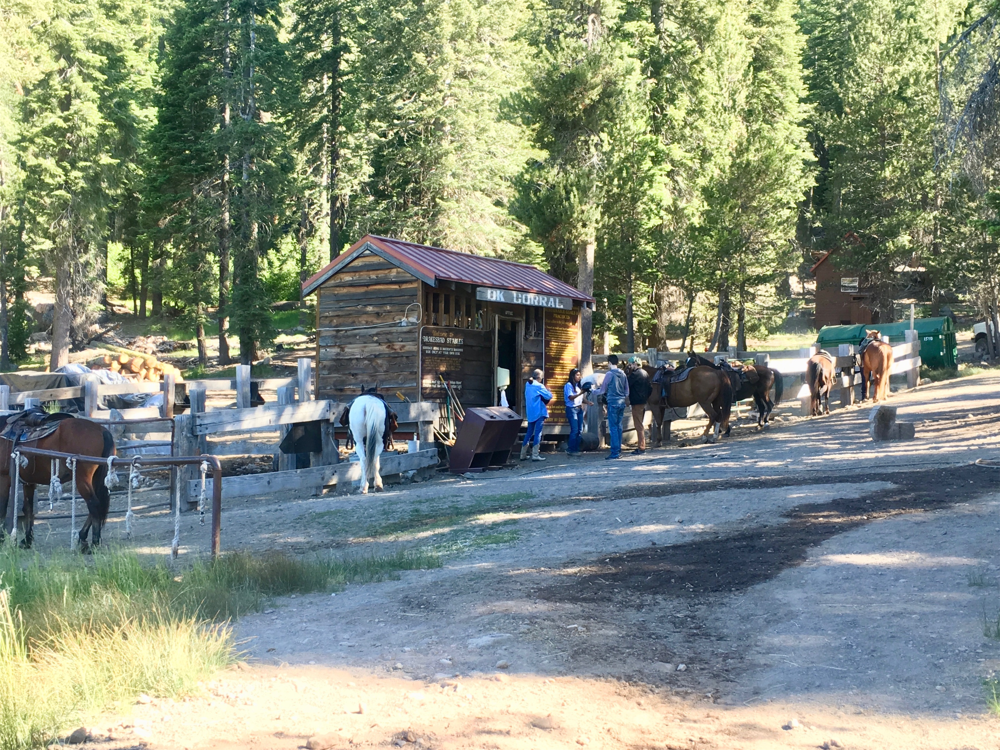
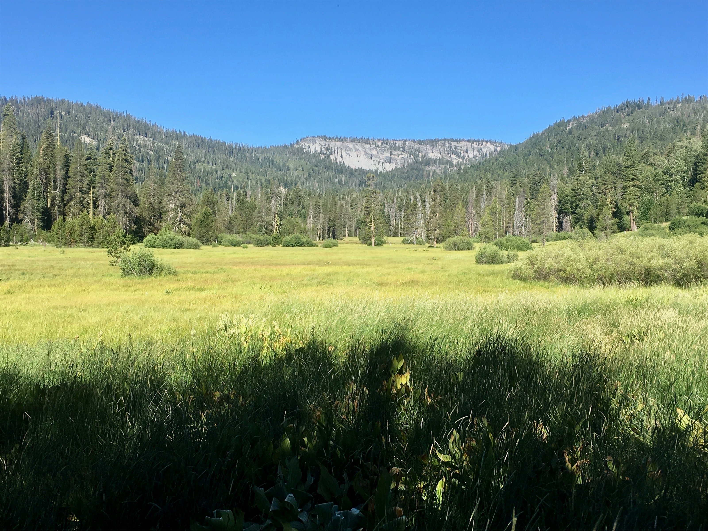
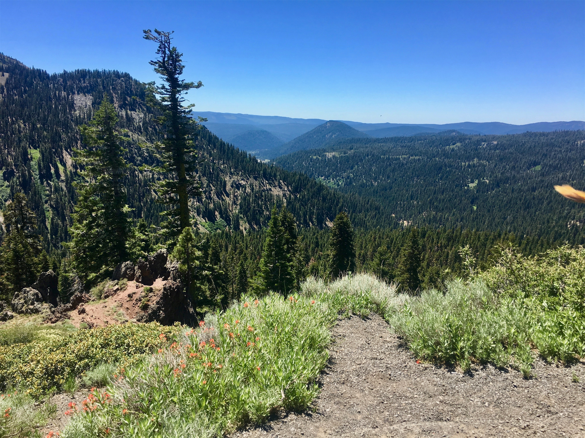
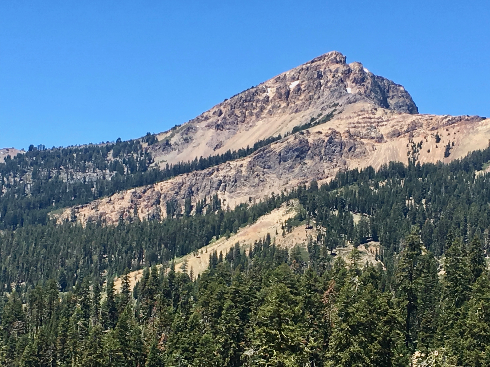
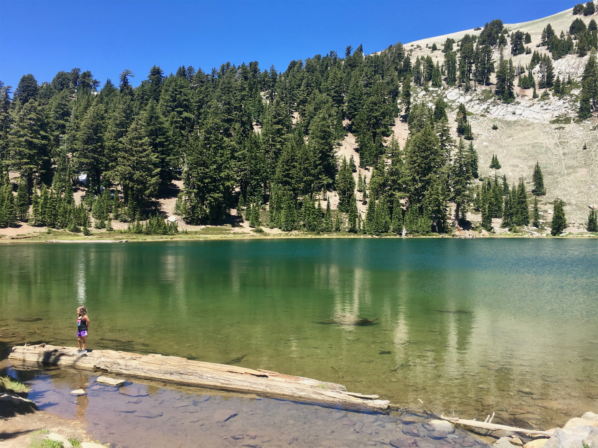
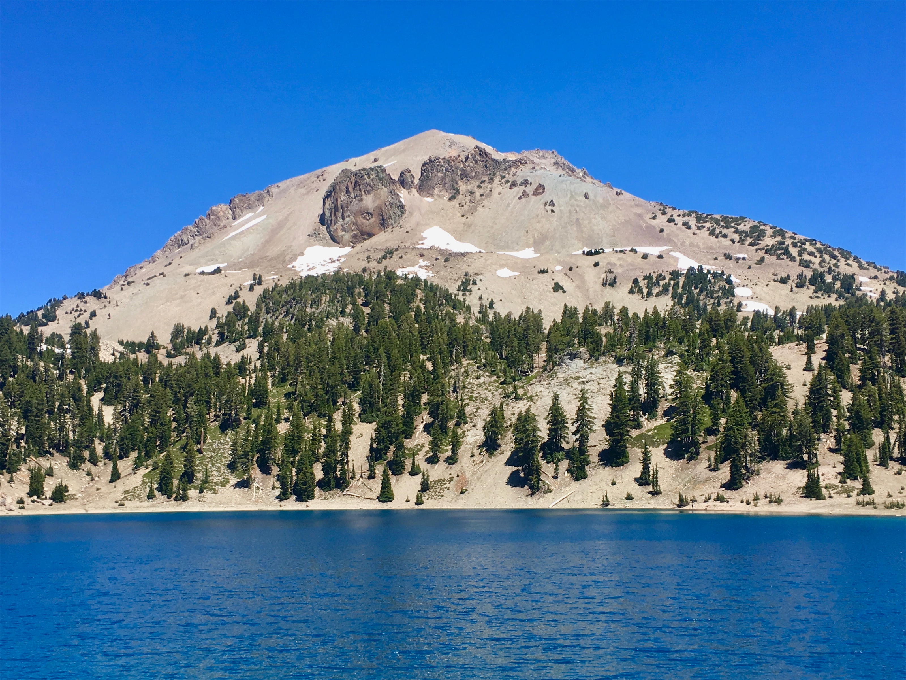
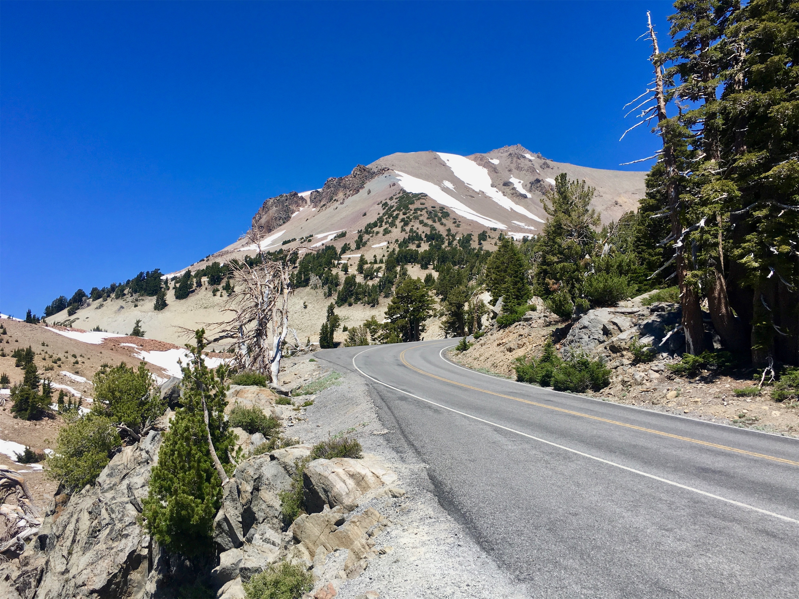
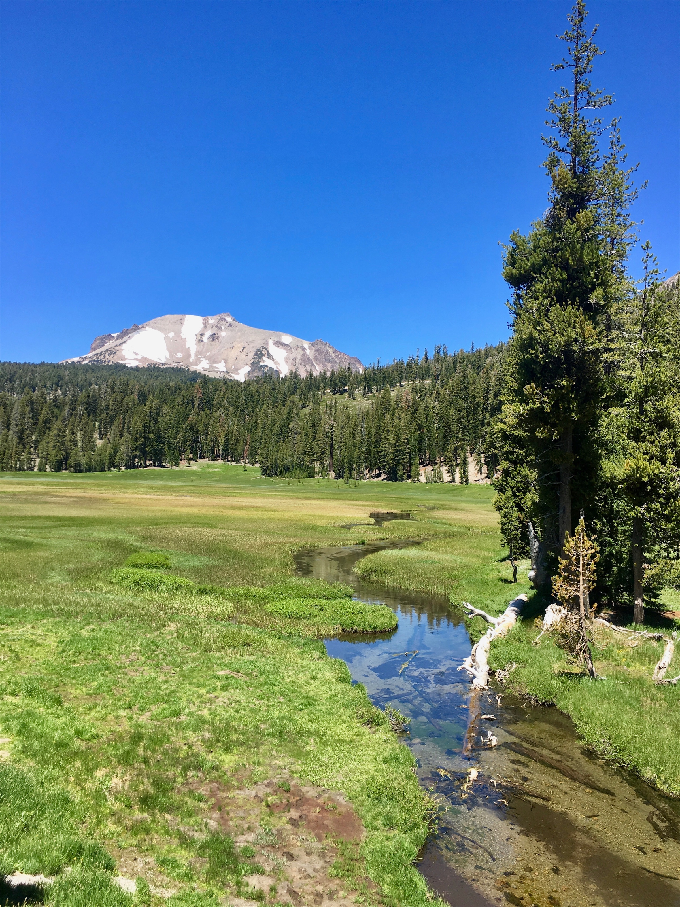
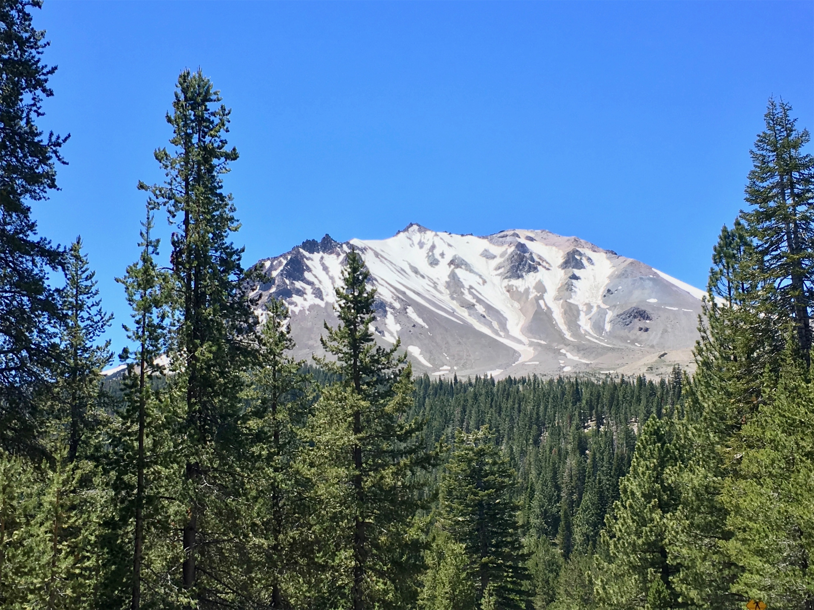

Saturday, Jun 30, 2018, 11:14 AM PDT
Kohm Yah-mah-nee Visitor Center, Mill Creek, CA, United States
90°F Sunny
90°F Sunny
![]()
6/28 Big Trees Lodge, CA -> Oroville, CA 271 mi, 6 hr
6/29 Oroville, CA -> Drakesbad Guest Ranch, CA 123 mi, 3 hr
6/30 Drakesbad Guest Ranch, CA -> Kohm Yah-mah-nee Visitor Center, CA 47 mi, 1.5 hr
6/30 Kohm Yah-mah-nee Visitor Center, CA -> Loomis Museum, CA 28 mi, 2.25 hr
Trip Total: 5,330 mi
Once again, we headed west down the Sierra Nevada mountains to the valley, and then north through Sacramento, headed to our overnight stay in Oroville, home to the major dam that almost ruptured last year. To mix things up, we stayed in the very nice Gold Country Casino & Hotel. The next day, we headed for a place that took us out of our comfort zone. The Drakesbad Guest Ranch is inside Lassen Volcanic National Park, on the east end. It is very rustic compared with all other park lodges. It not only doesn’t have any cell or internet service, it doesn’t have electricity or an in-room shower. There is a volcanic water shower near their volcanic water swimming pool. Despite the warning, our room (which was in the 2nd floor of their gift shop and game room lodge) did have a light for the bathroom, along with an LED “kerosene” lantern. The stay includes three communal gourmet meals (called to via a clanging bell) of amazingly high quality. During dinner, there was a table of about 20 family members eating together, and it turns out some were from Minnesota, and even Woodbury! We opted not to do the horseback riding or the massages, but did go on a partial hike the next morning, until the rocks and mud became too difficult to navigate.
Later in the day, we exited the park and looped around to the southwest entrance to drive the main scenic road. This stunning and interesting park, at the southernmost end of the Cascade mountain range, is a best kept secret. It is kind of a mini combination of Mt. Rainier, Yellowstone, and Hawaii Volcanos. It is famous for numerous volcanoes, including one that is still active, Lassen Peak (10,457 ft), which last erupted in 1917, and is the largest plug dome volcano in the world. It still had some snow on it. The park has examples of all four major types of volcanos, along with gorgeous blue lakes and trees. It also has steam vents, sulfur springs, and bubbling mud pots, reflecting the geothermal activity. The weather was perfect at sunny and 65 degrees. In fact, except for a brief downpour in Big Bend, every day of our trip so far has been sunny and dry.









